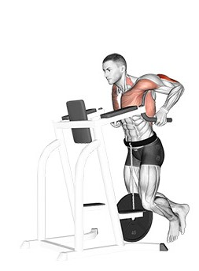

Exercise Description
With a weighted vest on, use parallel bars to lift and lower your body. Lower until your upper arms are parallel to the ground, then push back up. A good warm-up excercise.
Reps and Sets
Beginners: 3 sets of 15-20 reps
Weights: 10kg plate
Rest time between each set: 45secs
Video Implementation